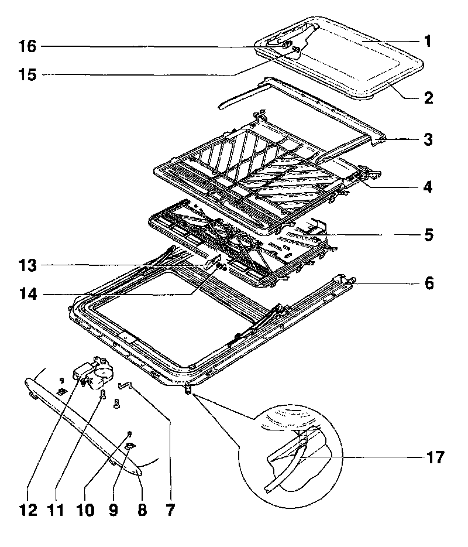

Exploded Views
Assembly overview

1 Glass panel for sunroof
2 Panel seal
3 Trim frame
Note: Due to a running change in production, on some vehicles the cable drive 12 must also be replaced when replacing the sliding headliner 4.
4 Headliner up to 08.94
5 Headliner 09.94 on
6 Carrier unit
Carrier unit consists of the following parts:
- U frame with guide channels (if required, guide channels are to be lubricated with special grease G 000 450 02 only, to ensure proper operation. Multi-purpose grease must not be used under any circumstances).
7 Hex key for emergency operation
8 Wind deflector
9 Threaded fitting
10 Screw
11 Countersunk self-locking screws
12 Cable drive (electric)
13 Locating hooks
14 Locating hook spring
15 Torx� screw
16 Adjusting plate
17 Water drain hose